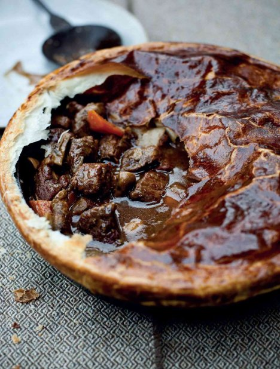

Beef and guinness pie

Beef and Guinness are a classic combination for a stew, but feel free to experiment here with different local ales – I’ve come across some that work brilliantly. You can, of course, serve the filling without the pastry as a stew, perhaps adding some lightly browned, diced ox kidney. I often make double the quantity of stew and freeze half for another meal.
Heat the oven to 150°C. Dust the pieces of stewing steak all over with flour and season with salt and pepper. Heat a heavy-based ovenproof sauté pan over a medium-high heat and add a good drizzle of olive oil. Brown the beef in two batches for 4–5 minutes until well caramelised. Remove with a slotted spoon and set aside.
Return the pan to the heat and add another drizzle of oil. Add the onion, carrots and mushrooms, lower the heat and sweat gently for 4–5 minutes. Add the garlic and bouquet garni.
Pour in the red wine and let bubble to reduce by half, then add the Guinness or stout. Bring back to the boil and then return the beef to the pan. Put a lid on the pan and place in the oven. Cook for 3 hours or until the beef is tender and the liquor has reduced and thickened.
Raise the oven setting to 180°C. Transfer the beef stew to a pie dish, discarding the bouquet garni. Cut out a disc of pastry large enough to cover the pie dish generously (allow about 3 cm extra all round). Dampen the rim of the dish with water, then lift the pastry over the top of the stew. Press the edges of the pastry onto the rim of the dish and trim away the excess pastry.
Brush the pastry lid with eggwash and bake the pie in the oven for 15–20 minutes until the pastry is golden brown and crisp. Serve with seasonal vegetables.